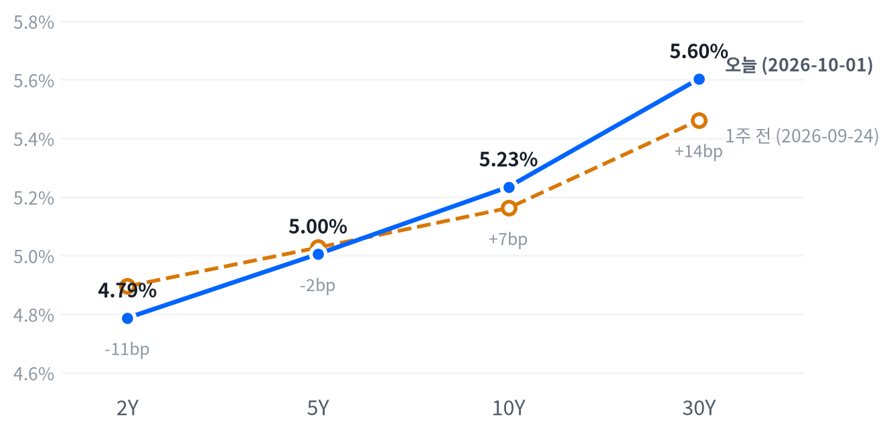

목요일 뉴욕 증시는 오전 금리·유가 상승에 밀렸다가 오후에 되돌려 S&P500이 0.19% 오른 강보합으로 끝났다. 국채 앞쪽이 크게 내린 날 브렌트 12월물은 중동 항모 추가 파견 보도에 4.4% 올랐다(CNBC).
단기 금리가 유가가 아니라 연준 발언에 반응해 10월 인상 가능성을 덜어 냈다고 판단한다. 10월 2일 고용보고서에서 2년물이 이 하락을 되돌리는지가 연말 인상 경로를 가른다.
이날 하루를 정한 것은 국채 앞쪽이었다. 2년물 금리가 4.787%로 크게 내려, 전날 약한 PCE에도 꿈쩍하지 않던 자리에서 밀려났다. 지표는 오히려 매파 쪽이었다. 신규 실업수당 청구는 예상보다 적었고 ISM 제조업 가격지불지수는 5월 이후 최고로 올랐으며, 유가도 중동 항모 추가 파견 보도에 뛰었다.
그런데도 앞쪽이 내린 것은 시장이 10월 인상 가능성을 덜어 냈기 때문이라고 본다. CNBC가 인용한 베어드의 로스 메이필드도 2년물 하락을 이번 달 인상 확률을 빼는 움직임으로 봤다. 제퍼슨 연준 부의장은 이날 연설에서 동료들과 자신이 판단을 내리는 데 시간이 더 걸릴 수 있다고 말했고(Reuters), 오후 금리 하락과 시점이 맞는다. CME FedWatch를 인용한 보도에서 10월 인상 확률은 36%까지 내려왔지만, 12월까지 한 번 이상 오를 확률은 89%로 남았다. 아직 가리지 못한 것은 이 발언이 10월만 뺐는지, 연말까지의 누적 경로도 낮췄는지다. 발언 전 같은 도구의 12월 분포를 남겨 두지 못해 오늘 자료로는 둘을 나눌 수 없다.
새 투자 아이디어는 내지 않고 10월 2일 08:30(ET) 9월 고용보고서까지 관망한다. 앞쪽이 하루 만에 크게 내려와 2년물의 출발점이 낮아졌기 때문에, 고용이 강하게 나오면 되돌림이 커질 수 있는 비대칭이 생겼다. 이를 표현할 수단은 2년물 선물이나 2s10s 커브인데, 캐리·롤과 10월 6일 3년물 입찰의 영향을 잴 자료가 없어 비용을 평가할 수 없다. 2s10s가 1주 사이 18.0bp 벌어져 움직임의 상당 부분도 이미 지나갔다. 주식은 지수가 고점권에서 거의 움직이지 않았고 급등 종목은 각자 실적·커버리지 재료로 올라, 지수 방향에 새 판단을 걸 근거가 되지 못한다.
고용이 컨센서스(+8.4만 명)를 크게 웃돌았는데도 2년물이 오늘 종가 부근에 머물면, 발언이 10월만 뺀 것이 아니라 연말 경로까지 낮췄다고 보고 판단을 고친다. 고용이 크게 밑돌고 실업률이 4.2%를 넘으면 인상 우위 판단 자체를 다시 본다. 고용이 컨센서스 부근이면 어느 쪽도 가려지지 않아 판단을 10월 9일까지 미룬다.
| 지수 | 종가 | 등락률 | 기준일 |
|---|---|---|---|
| 닛케이225 | 66,753.72 | +1.94% | 9월 30일 |
| 항셍 | 24,613.27 | +0.37% | 9월 30일 |
| 상해종합 | 3,842.20 | +0.31% | 9월 30일 |
| DAX | 25,199.19 | -0.79% | 9월 30일 |
| FTSE100 | 10,606.00 | -0.29% | 9월 30일 |
| 유로스톡스50 | 6,269.02 | -0.81% | 9월 30일 |
| VIX | 16.39 | +0.31% | 10월 1일 |
아시아·유럽 지수는 확보된 가장 최근 마감인 9월 30일 기준이다. VIX는 10월 1일 마감 기준이다.
유럽은 미국과 엇갈렸다. 9월 30일 유럽 세 지수가 모두 내렸지만(DAX -0.79%, 유로스톡스50 -0.81%) 미국은 다음 날 강보합으로 끝났다. 아시아는 미국과 같은 쪽이었다. 닛케이가 1.94% 올랐고 항셍과 상해종합도 소폭 올랐다. VIX는 거의 움직이지 않아, 오전 매도에도 변동성 시장은 흔들리지 않았다.
야간 선물은 오름세였다. S&P 선물(ES)은 02:00(ET) 7,768로 고점을 찍은 뒤 04:30 7,705까지 밀렸고, 나스닥100 선물(NQ)은 하루 1.68% 폭에서 움직였다. Invezz는 마이크론과 액센츄어 실적이 나스닥 선물을 끌어올렸다고 전했다. 현물은 S&P +0.20%, 나스닥 +0.47% 갭으로 올라 출발했고 러셀2000만 0.08% 낮게 열렸다.
세 지수 모두 하루 범위의 중간쯤에서 끝났다. 오전 낙폭을 오후에 되찾았지만 고점까지 밀어붙이지는 못한 하루였다.
고점권·저점권 경계는 최근 2,259거래일의 일간 종가 위치 이력으로 다시 잰 기준이다.
오전은 금리와 유가가, 오후는 금리 하락이 지수를 움직였다. Investrade는 10년물·30년물 금리가 다시 20년 넘는 고점을 찍고 유가가 오르면서 오전 내내 지수가 눌렸다고 전했다. 지수는 11:00(ET) 무렵 바닥을 찍었고, 국채금리가 오후 중반부터 물러나자 반도체가 반등을 이끌었다. 제퍼슨 부의장 연설은 오후 금리 하락과 시점이 맞는다. 연설 시각을 확인하지 못했고 지수 저점이 그보다 앞서, 주가 반등이 어디서 시작됐는지는 확인되지 않았다. 장 마감 뒤에는 나이키가 1분기 매출 4% 감소와 중국 매출 26% 감소를 내놓고 시간외에서 약 3% 내렸다(CNBC).
주식과 금리는 최근 60거래일 동안 느슨하게 반대로 움직여 왔다(상관계수 -0.426, 직전 60거래일 -0.567).
| 지수 | 종가 | 등락률 |
|---|---|---|
| 러셀2000 | 2,806.63 | +0.35% |
| S&P500 | 7,666.45 | +0.19% |
| S&P500 성장주 | 142.53 | +0.19% |
| S&P500 가치주 | 228.61 | +0.14% |
| 다우존스 | 50,926.56 | +0.04% |
| 나스닥 | 26,871.60 | +0.04% |
| 섹터 | 등락률 |
|---|---|
| 에너지 | +1.95% |
| 기술 | +1.05% |
| 산업재 | +0.99% |
| 유틸리티 | +0.61% |
| 금융 | +0.11% |
| 경기소비재 | -0.03% |
| 소재 | -0.33% |
| 필수소비재 | -0.33% |
| 부동산 | -0.56% |
| 커뮤니케이션서비스 | -0.93% |
| 헬스케어 | -1.32% |
S&P500은 7,666으로 올라 최근 2년(504거래일) 가운데 이보다 높았던 날이 29일뿐인 자리를 지켰고, 나스닥은 이보다 높았던 날이 아흐레뿐이다. 하루 움직임은 세 지수 모두 여느 날 폭의 절반에도 못 미쳐, 지수만 보면 거의 멈춰 있던 하루다. 한 주로 넓히면 기술 섹터만 1.59% 올랐고 나머지 업종은 대부분 내려, 지수의 높이는 여전히 기술 한 업종이 받친다.
나스닥은 개장가가 그날의 고점이었다. 오전 금리 상승에 시가보다 0.93% 밀린 뒤 오후에 대부분 되찾았지만, 갭 상승분까지 되돌리지는 못했다. S&P500은 11:00(ET) 7,617 저점에서 오후 내내 올라 장 막판 7,685까지 갔고, Investrade는 오전 저점 대비 60포인트 넘는 반등이라고 전했다. 러셀2000은 한때 시가보다 0.94% 높이 올라 세 지수 가운데 가장 강했다. 엔비디아도 지수와 같은 오전에 저점을 찍고 오후에 232달러 위로 올라섰다.
지수 상승은 기술 한 업종이 만들었다. 기술 섹터가 S&P 상승에 +0.36%포인트를 보탰고, 헬스케어(-0.12%포인트)와 커뮤니케이션서비스(-0.12%포인트)가 그 가운데 3분의 2가량을 깎았다. 에너지는 가장 많이 올랐지만 지수 기여는 +0.05%포인트에 그쳤다. 설명되지 않는 부분은 -0.04%포인트로 작아, 오늘 지수는 섹터 움직임으로 거의 다 설명된다.
섹터 기여는 최근 252거래일 회귀로 추정했고 설명력은 0.976이다. 소재·부동산은 추정에서 식별되지 않아 뺐다.
업종 밖의 큰 움직임은 개별 재료에서 나왔다. 액센츄어·시놉시스·페어아이작이 각각 실적, 인베스터데이, 규제 승인으로 두 자릿수 올랐다. 크래머는 3분기 동안 소프트웨어 ETF(IGV)가 17% 오르고 반도체 ETF(SOXX)가 11% 내렸다며 주도권 이동을 짚었지만(CNBC), 오늘 급등을 한 테마로 묶을 근거는 그 코멘트뿐이다. 헬스케어는 업종 가운데 가장 약했는데 확인된 재료가 없다. 성장주와 가치주의 차이도 작았다. 지수가 고점권에서 거의 움직이지 않았고 마감도 하루 범위 중간이라, 오늘 상승은 다음 방향에 대해 말해 주는 것이 적다고 본다.
| 만기 | 종가 | 전일比(bp) | 1주 전 | 주간 변화(bp) |
|---|---|---|---|---|
| 2Y | 4.787% | -10.0 | 4.895% | -10.8 |
| 5Y | 5.005% | -8.4 | 5.027% | -2.2 |
| 10Y | 5.234% | -5.9 | 5.162% | +7.2 |
| 30Y | 5.603% | -3.6 | 5.462% | +14.1 |
네이버 국채 종가 기준(2026-10-01, 전 만기 동일 기준일). 1주 전은 9월 24일.

1주 전(9월 24일)보다 2년물은 내리고 30년물은 올라 커브가 가팔라졌다. 장기물 상승폭이 단기물 하락폭보다 커 베어 스티프닝 쪽이다.
10년물은 5.234%, 30년물은 5.603%로 내렸지만 높이는 그대로다. 10년물은 최근 2년(504거래일) 가운데 이보다 높았던 날이 사흘뿐이고, 30년물은 이보다 높았던 날이 하루뿐이다. CNBC는 10년물이 장중 2002년 4월 이후 최고 수준을 넘었다가 내렸고 30년물도 24년 고점을 찍은 뒤 물러났다고 전했다. 오늘 장기물 하락은 평소 하루 움직임과 비슷한 보통 크기였고, 한 주로 보면 10년물은 7.2bp, 30년물은 14.1bp 올라 있다.
하루로는 불 스티프닝이다. 2년물이 가장 크게 내렸고 5년물 8.4bp, 10년물 5.9bp, 30년물 3.6bp 순으로 만기가 길수록 덜 내렸다. 2s10s는 44.7bp로 전 거래일(40.6bp)보다 4.1bp 벌어졌다. 5s30s도 59.8bp로 4.8bp 넓어졌다. 1주 전과 견주면 단기물은 내리고 장기물은 올라 2s10s가 26.7bp에서 크게 넓어졌다. 지난주에는 장기물이 커브를 끌어올렸고, 이번에는 단기물이 커브를 끌어내리며 같은 방향의 스티프닝을 이었다.
앞쪽 하락은 지표가 아니라 연준 발언에서 나왔다고 본다. 신규 실업수당 청구는 예상(20만 건)을 밑돌았고 ISM 제조업 가격지불지수는 77.9로 전월(71.1)보다 크게 올라, 지표만 보면 금리가 올라야 하는 날이었다. 제퍼슨 부의장은 향후 정책 조정이 데이터의 추세와 전망, 위험의 균형을 따져 정해져야 한다고 말했고, 인플레 위험은 지정학과 강한 총수요 때문에 위쪽이라고 덧붙였다(Reuters). Investing.com은 이 연설을 추가 인상을 서두를 필요가 없다는 뜻으로 요약했다. 브렌트가 크게 오른 날에도 10년 기대인플레가 2.36%에서 움직이지 않아, 이날 채권은 유가보다 연준 발언에 반응했다.
같은 날짜로 맞춘 가장 최근 분해는 9월 30일 기준이라 오늘 하락의 내역은 아직 없다. 그날 10년물 명목금리 3bp 상승 가운데 실질금리가 2bp, 기대인플레가 1bp였고, 한 주 상승분 18bp는 거의 전부(17bp)가 실질금리 몫이었다. 10월 1일 실질금리가 갱신되면 오늘 하락이 그 실질금리 상승의 되돌림인지 갈린다. 10년 기간프리미엄은 9월 25일 기준 1.02%포인트가 최신이다.
신용 스프레드는 9월 30일까지 넓어지는 쪽이었다. 하이일드는 3.12%포인트로 한 주 39bp, 투자등급은 0.84%포인트로 7bp 벌어졌다. 10월 1일 4주물 입찰은 응찰배율 2.83배, 간접 낙찰 56.1%로 무난했다. 장기물 수급을 가늠할 이표채 입찰은 다음 주 3년·10년·30년물이 처음이다.
5년 뒤 5년 명목금리는 9월 30일 기준 5.49%로 하루 3bp 올랐고, 실질 기준으로는 3.13%다. 기대인플레 지표와의 교차검증은 이번에 할 수 없었다. 위험 프리미엄이 섞인 값이라, 시장이 먼 구간 금리를 이 수준에서 거래한다는 정도로 읽는다.
| 통화쌍 | 종가 | 등락률 |
|---|---|---|
| DXY | 102.04 | +0.58% |
| USD/KRW | 1,356.84 | +0.47% |
| USD/JPY | 157.56 | +0.10% |
| EUR/USD | 1.1327 | -0.12% |
달러지수는 102.04로 하루 0.58% 올라 평소 하루 움직임의 두 배를 뛰었다. 레벨로는 한가운데쯤이라 자리는 평범하고, 움직임만 컸다. 원/달러는 1,357원으로 올랐지만 이보다 낮았던 날이 19일뿐인 원화 강세 자리에 여전히 있다. 엔/달러와 유로/달러는 거의 움직이지 않았다.
달러 강세는 미국 금리로 설명되지 않는다. 2년물이 크게 내린 날이라 단기 금리차는 오히려 달러에 불리했다. Investing.com은 유가 반등, 프랑스·이탈리아 예산을 둘러싼 불확실성, 부진한 일본 단칸을 묶어 정책 차별화를 달러 강세 요인으로 들었다. investinglive는 유로/달러가 1.13 아래로 내려가며 달러가 3개월 고점에 올랐다고 전했다. 유로 쪽 재정 재료는 해설 수준이라 원인으로 확인되지 않았다. 10월 2일 고용보고서 뒤 2년물과 달러가 같은 방향으로 움직이는지가 금리 경로가 다시 달러를 쥐는지를 가른다.
엔/달러는 08:00(ET) 158.45엔 고점에서 밀려 오후 한때 157.21엔까지 내려왔다. 미국 금리가 물러난 오후에 엔이 강해진 셈이라, 엔화 쪽은 금리차 경로와 맞게 움직였다.
주식과 달러의 최근 60거래일 상관계수 -0.313(직전 60거래일 -0.533).
| 품목 | 종가 | 등락률 |
|---|---|---|
| WTI | $93.03 | +2.89% |
| Brent(12월물) | $102.48 | 월물 교체로 비교 불가 |
| 천연가스 | $2.948 | -2.58% |
| 금 | $4,210.40 | +0.57% |
브렌트 연속 시리즈는 11월물 만기(9월 30일) 뒤 12월물로 바뀌어 전일 값과 다른 계약이 비교된다. 같은 월물 기준 등락은 CNBC가 전한 12월물 정산가를 따른다.
WTI는 93.03달러로 2.89% 올라 최근 2년(504거래일) 가운데 높은 쪽 12% 안에 있다. 종가 기준으로는 평소 하루 움직임과 비슷한 보통 크기였지만, 장중으로는 더 컸다. 시가 89.14달러에서 13:30(ET) 93.68달러까지 5% 넘게 올랐고, 그 뒤 고점 부근을 지켰다.
공급 쪽 재료가 유가를 밀었다. CNBC는 WSJ가 보도한 세 번째 항공모함(시어도어 루스벨트함)의 중동 파견과 해병·최대 1만 명 추가 배치 소식에 브렌트 12월물이 4.4% 오른 102.31달러, WTI가 2.7% 오른 92.87달러에 정산했다고 전했다. 정산가와 표의 종가는 관측 시각이 다르다. 브렌트와 WTI의 스프레드는 브렌트 월물이 바뀐 탓에 오늘은 같은 기준으로 잴 수 없다. 천연가스는 2.58% 내렸고 확인된 재료는 없다.
금은 4,210달러로 0.57% 올라 같은 기간의 한가운데쯤에 있고, 움직임은 미미했다. 고점과 저점이 모두 미국 장 전 아시아 시간대에 나왔고, 미국 장중에는 좁은 범위에 머물렀다. 금리가 내린 날 소폭 오른 것은 금과 금리가 최근 60거래일 느슨하게 반대로 움직여 온 관계 안에 있다.
금과 금리의 최근 60거래일 상관계수 -0.32(직전 60거래일 -0.314).
미국 경기 국면은 골디락스를 이틀째 이어 간다. 오늘 새로 나온 지표는 주간 실업수당 청구뿐이고, 9월 30일 국면을 옮긴 뒤 5영업일이 지나지 않아 좌표를 다시 움직일 수 없다. 성장 점수(-0.042)는 보합 안쪽에 있고, 물가 점수(-0.869)는 여덟 지표 가운데 다시 가속하는 것이 없어 둔화 쪽이다. 10월 2일 고용상황이 올려 놓은 성장 좌표를 처음 시험한다.
| 지표 | Actual | Forecast | Previous | 발표일 | 컨센 대비 | 직전 대비 | 추세 |
|---|---|---|---|---|---|---|---|
| 구인건수(8월) | 7,079K | — | 7,335K | 2026-08 기준월 | 악화 | 악화(미미) · 3개월 평균 7,336K → 7,199K | |
| 신규 실업수당 청구 | 197,000 | 200,000 | 198,000 | 2026-10-01(9월 26일 주간) | 하회▼ | 개선 | 개선(완만) · 4주 평균 208K → 200K |
| 신규 청구 4주 평균 | 200,000 | — | 202,500 | 9월 26일 주간 | 개선 | 보합 · 4주 평균 204K → 203K | |
| 계속 실업수당 청구 | 1,701,000 | — | 1,712,000 | 9월 19일 주간 | 개선 | 개선(뚜렷) · 4주 평균 1,781K → 1,724K | |
| 비농업 고용 변화(8월) | +162K | — | +21K | 2026-08 기준월 | 개선 | 악화(완만) · 3개월 평균 +142K → +71K | |
| 실업률(8월) | 4.1% | — | 4.1% | 2026-08 기준월 | 보합 | 개선(완만) · 3개월 평균 4.30% → 4.13% | |
| 평균시간당임금 MoM(8월) | +0.27% | — | +0.16% | 2026-08 기준월 | 개선 | 개선(완만) · 3개월 평균 +0.20% → +0.23% |
노동부(DOL)에 따르면 9월 26일 주간 신규 실업수당 청구는 계절조정 197,000건으로 전주보다 1,000건 줄어 시장 예상(20만 건)을 밑돌았다. 9월 19일 주간 계속 청구는 1701000건으로 11,000건 줄었다.
개선의 크기는 작다. 계절조정 전 신규 청구는 156,738건으로 7,979건(4.8%) 줄었는데, 계절요인이 이미 6,747건(4.1%) 감소를 예상하고 있었다. 전주 신규 청구는 197,000건에서 198,000건으로 올려 잡혔고, 계속 청구 전주치는 7,000건 낮춰졌다. 9월 26일 주간 속보에서 아이다호의 신규 청구가 0건으로 집계됐는데, 노동부는 그 사유를 밝히지 않았다.
해고도 실직 장기화도 늘지 않는다는 그림이라 고용축의 개선 방향을 지지하지만, 국면이나 정책 경로를 밀 만한 크기는 아니다.
| 지표 | Actual | Forecast | Previous | 발표일 | 컨센 대비 | 직전 대비 | 추세 |
|---|---|---|---|---|---|---|---|
| 산업생산 MoM(8월) | +0.02% | — | +0.20% | 2026-08 기준월 | 악화 | 보합 · 3개월 평균 +0.24% → +0.14% | |
| 내구재주문 MoM(8월) | -0.02% | — | +0.86% | 2026-08 기준월 | 악화 | 악화(완만) · 3개월 평균 +1.95% → +0.47% | |
| 신규주택판매(8월) | 684K | — | 643K | 2026-08 기준월 | 개선 | 개선(미미) · 3개월 평균 645K → 666K | |
| 기존주택판매(8월) | 398만 | — | 406만 | 2026-08 기준월 | 악화 | 악화(미미) · 3개월 평균 4,080K → 4,057K | |
| 실질GDP QoQ 연율(2분기) | +2.2% | — | +2.5% | 2026년 2분기 기준 | 악화 | — | |
| ISM 제조업 PMI(9월) | 54.5 | 55.0 | 54.6 | 2026-10-01 | 하회▼ | — | — |
| 지표 | Actual | Forecast | Previous | 발표일 | 컨센 대비 | 직전 대비 | 추세 |
|---|---|---|---|---|---|---|---|
| 소매판매 MoM(8월) | +1.13% | — | -0.46% | 2026-08 기준월 | 개선 | 악화(뚜렷) · 3개월 평균 +1.09% → +0.29% | |
| 미시간대 소비자심리(8월) | 51.7 | — | 55.2 | 2026-08 기준월 | 악화 | 개선(미미) · 3개월 평균 49.3 → 52.1 |
| 지표 | Actual | Forecast | Previous | 발표일 | 컨센 대비 | 직전 대비 | 추세 |
|---|---|---|---|---|---|---|---|
| CPI YoY(8월) | 3.71% | — | 3.54% | 2026-08 기준월 | 상승 | 교착 · 3개월 평균 3.85% → 3.66% | |
| CPI MoM(8월) | +0.40% | — | +0.07% | 2026-08 기준월 | 상승 | 둔화(뚜렷) · 3개월 평균 +0.66% → +0.02% | |
| Core CPI YoY(8월) | 2.76% | — | 2.79% | 2026-08 기준월 | 하락 | 교착 · 3개월 평균 2.87% → 2.79% | |
| Core CPI MoM(8월) | +0.29% | — | +0.22% | 2026-08 기준월 | 상승 | 둔화(완만) · 3개월 평균 +0.26% → +0.16% | |
| PPI 최종수요 MoM(8월) | +0.40% | — | +0.07% | 2026-08 기준월 | 상승 | 둔화(뚜렷) · 3개월 평균 +0.79% → +0.12% | |
| PCE 물가 YoY(8월) | 3.42% | 3.7% | 3.36% | 2026-09-30 | 하회▼ | 상승 | 둔화(미미) · 3개월 평균 3.59% → 3.41% |
| Core PCE YoY(8월) | 3.01% | 3.3% | 2.98% | 2026-09-30 | 하회▼ | 상승 | 둔화(미미) · 3개월 평균 3.12% → 3.01% |
| 미시간대 1년 기대인플레(8월) | 4.0% | — | 4.2% | 2026-08 기준월 | 하락 | 교착 · 3개월 평균 4.43% → 4.27% | |
| ISM 제조업 가격지불(9월) | 77.9 | 약 72 | 71.1 | 2026-10-01 | 상회▲ | — | — |
직전 대비는 Actual을 Previous와 비교한 것이고, 추세는 최근 3개월 평균을 그 앞 3개월 평균과 비교한 것입니다(주간 실업수당 청구는 4주 평균끼리). 추세의 세기는 그 지표가 평소 움직이는 폭에 견준 크기이고, 작은 변화는 보합으로 봅니다. 분기 지표인 GDP는 두 비교가 같은 숫자를 보므로 직전 대비만 싣습니다.
연준의 다음 수는 연내 한 차례 추가 25bp 인상, 시점은 10월 28일보다 12월 9일 FOMC 쪽이라는 판단을 유지한다. CME FedWatch를 인용한 보도(KuCoin)에서 10월 인상 확률은 36%, 12월 회의까지의 분포는 동결 11%, +25bp 59.2%, +50bp 29.8%였다. 관측 시각이 밝혀지지 않아 전날 값과 같은 조건의 비교는 아니지만, 어느 쪽으로 봐도 시점 판단을 옮길 만큼 움직이지 않았다. 골드만삭스도 다음 인상 전망을 12월로 미뤘다(Reuters).
10월 2일 9월 고용이 컨센서스(+8.4만 명)를 크게 밑돌고 실업률이 4.2%를 넘으면 인상 우위 판단을 재검토한다. 고용이 예상을 크게 웃돌고 보도된 10월 인상 확률이 다시 과반으로 올라서면 시점을 10월 쪽으로 당긴다.
자산별 전달경로는 전일과 같다. 실업수당 청구 한 건으로는 어느 경로의 방향도 바뀌지 않았다.
신규 청구가 예상을 밑돌아 노동시장이 단단하다는 신호였지만, 금리는 그 반대로 움직였다. 2년물이 크게 내리고 주식은 오전에 밀렸다가 되돌렸다. 발표 직후의 장중 금리 경로는 없어 종가로만 보면, 시장은 이 지표보다 같은 날 연준 발언에 무게를 뒀다고 판단한다.
액센츄어(+15.78%)는 4분기 실적이 회사 가이던스를 넘었다. 회사 IR과 Investing.com에 따르면 분기 매출은 187억 달러로 가이던스(177.5억~184억 달러)를 웃돌았고, 주당순이익은 3.29달러였다. 분기 신규 수주는 222억 달러, 연간 수주는 845억 달러로 사상 최대였고 1억 달러 이상 대형 수주가 141건이었다.
시놉시스(+12.78%)는 인베스터데이에서 AWS와의 다년 라이선스 계약, OpenAI 협력, 자사주 매입, 2027 회계연도 매출 가이던스 상향을 내놨다(Yahoo UK). AWS가 커스텀 칩 설계에 시놉시스 IP와 설계 소프트웨어를 쓰는 계약이다. 페어아이작(+11.69%)은 미 연방주택금융청(FHFA) 풀트 국장이 FICO 직접 라이선스 프로그램 모델을 승인한 뒤 급등했다고 Investing.com이 전했다.
루멘텀(+7.67%)은 번스타인이 커버리지를 시장수익률 상회로 개시하며 네트워킹·광 공급사를 AI 인프라의 구조적 승자로 평가한 뒤 올랐다(TIKR, 24/7 Wall St). 같은 날 커버리지가 개시된 코히런트는 10.90% 올랐고, 24/7 Wall St에 따르면 AI 데이터센터용 광 플랫폼 PhotonLink를 공개했다.
AI 인프라 다섯 종목의 최근 성과는 업종 흐름을 따라간 결과로 본다. 이 바스켓은 최근 20거래일 동안 S&P보다 14.65% 더 올랐고, 그 가운데 반도체 업종 몫이 17.26%포인트로 가장 컸다. 대형−소형 축은 -6.23%포인트를 깎았고 성장−가치 축은 +2.99%포인트를 보탰다. 세 축으로 설명되지 않는 몫은 0.63%포인트로 작다.
초과 성과는 하루치 초과수익을 20거래일 합한 값이고, 최근 60거래일 기준 추정이다. 이 바스켓의 시장 베타는 2.99다.
반도체는 지수를 가장 크게 받친 업종이었다(엔비디아 +1.09%, 마이크론 +3.03%). 마이크론은 전날 장 마감 뒤 낸 실적이 컨센서스를 넘었지만, CNBC는 1분기 총이익률 가이던스(약 86.25%)가 4분기(87%)보다 낮아 주가가 실적에 거의 움직이지 않았다고 전했다. 경영진은 1분기를 올해 총이익률의 바닥으로 봤다. 엔비디아는 확인된 당일 재료가 없고, 오후 금리 하락과 함께 반도체가 반등했다는 Yahoo Finance의 시장 정리가 있을 뿐이다.
알파벳(GOOGL -1.70%, GOOG -1.71%)은 지수를 가장 크게 끌어내린 쪽이었다. 확인된 재료는 없다.
그 밖에 마텔은 WSJ가 Authentic Brands의 인수 관심을 보도한 뒤 약 20% 올랐다(CNBC). 컨스텔레이션 에너지는 아마존과 20년 원전 전력구매계약을 맺었다고 Benzinga가 전했다.
전날(9월 30일) 연 질문은 약한 PCE에도 2년물이 움직이지 않은 이유였다. 우리는 시장이 인상 시점만 12월로 옮겨 연말까지의 누적 경로가 그대로였기 때문이라고 봤다. 시험일은 10월 2일이지만 그 전날 정황 하나가 생겼다. PCE 다음 날 2년물이 연준 발언에 크게 내렸다. 2년물이 시점 변화에 둔감하다는 우리 해석에는 불리한 정황이다. 발언이 연말 누적 경로까지 낮췄을 수도 있어 아직 가르지는 못한다. 시험 조건은 그대로다. 고용이 컨센서스와 뚜렷이 갈릴 때 2년물이 그 방향으로 크게 움직이고 보도된 12월 누적 인상 확률도 같은 쪽으로 가면 지지, 뚜렷한 서프라이즈에도 2년물이 제자리면 약화, 고용이 컨센서스 부근이면 판정을 미룬다. 시한은 10월 2일 17:00 ET다.
장기물 질문(9월 29일)은 장기물이 연준 경로·유가와 떨어져 기간프리미엄으로 가격이 매겨지는가였다. 방향은 이번에도 지지 쪽이다. 단기물이 장기물보다 훨씬 크게 내려 5s30s가 약화 기준선(53.1bp) 위에서 더 넓어졌다. 메커니즘은 가리지 못한다. 오늘의 모양은 연준 경로 재평가가 앞쪽을 끌어내린 불 스티프닝이라 기간프리미엄 없이도 설명되고, 기간프리미엄 추정치는 9월 25일이 최신이다. 다음 시험은 10월 2일 고용보고서, 마감은 10월 9일 17:00 ET다.
호르무즈 질문(9월 25일)은 호르무즈 협상 뉴스가 FedWatch 10월 인상 확률, 2년물, 커브 스티프닝을 함께 움직이는가였다. 오늘 에너지는 이 질문의 경로와 반대로 움직였다. 브렌트 12월물이 항모 추가 파견 보도에 크게 올랐는데, 2년물과 보도된 10월 인상 확률은 내렸고 그 원인으로는 제퍼슨 발언이 보도됐다. 9월 30일 PCE에 이어 이틀 연속 정책 기대가 에너지가 아니라 지표와 연준 발언에 반응해, 에너지가 단기 금리를 이끈다는 메커니즘은 약해졌다고 본다. 방향은 가리지 못한다. 브렌트 106달러 재반등을 요구한 반증 조건은 발동하지 않았고, 스티프닝은 이어졌다. 마감은 10월 9일 17:00 ET다.
반도체 질문(9월 28일)은 반도체·AI 하드웨어의 초과 하락이 AI 수요 우려인지 금리발 밸류에이션 압축인지였고, 오늘 장 마감으로 시험 기간이 닫혔다. 방향은 지지다. 10년물이 5.2% 위에 머무는 동안 마이크론과 AI 인프라 다섯 종목(단순평균 +5.18%)이 S&P를 크게 웃돌았다. 메커니즘은 가리지 못한 채 닫는다. 같은 날 금리가 함께 내려 금리 경로도 반등 쪽을 가리켰고, 바스켓 초과 상승의 대부분은 번스타인의 코히런트·루멘텀 커버리지 개시라는 종목 재료에서 나왔다. 마이크론 자체는 총이익률 가이던스가 상단을 눌러 실적에 크게 반응하지 않았다. 수요 쪽 설명이 이겼다고 볼 근거는 없다.
디커플링 질문(9월 22일)은 FOMC 인상 뒤 메모리·AI 인프라가 금리 민감 업종과 따로 움직이는가다. 오늘은 10년물이 내린 날이라 금리 상승에도 AI 인프라가 둔감한지를 시험할 조건이 아니었고, 금리 민감 업종도 유틸리티·금융·부동산이 엇갈려 새 증거가 되지 못했다. 마감은 10월 28일 FOMC다.
열린 질문 셋이 10월 2일 고용보고서 하나에 걸려 있다. 2년물이 오늘 하락을 되돌리는지, 5s30s가 좁혀지는지, 보도된 12월 분포가 어느 쪽으로 가는지를 같은 날 함께 본다.
이 보고서의 시세는 Yahoo Finance와 네이버 국채 종가, 거시 지표는 FRED와 각 발표 기관(BLS·BEA·Census 등), 그 밖의 내용은 본문에 밝힌 출처에서 가져왔다. 이 보고서는 투자 자문이 아니며 특정 자산의 매수·매도를 권유하지 않는다. 투자 판단과 그 결과에 대한 책임은 전적으로 투자자 본인에게 있다.